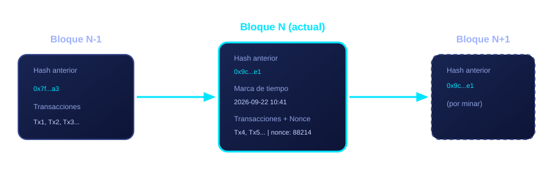

Definición
Blockchain (cadena de bloques) es un tipo de base de datos distribuida en la que la información se agrupa en bloques que se enlazan cronológicamente mediante funciones hash criptográficas. Cada bloque contiene el hash del bloque anterior, por lo que modificar un registro antiguo obligaría a recalcular todos los bloques posteriores en la mayoría de las copias de la red, algo computacionalmente inviable. Esta propiedad es la que le da su característica de inmutabilidad.
A diferencia de una base de datos tradicional administrada por una sola entidad, una blockchain suele ser distribuida: miles de computadoras (nodos) alrededor del mundo guardan una copia idéntica del registro y la validan de forma independiente, siguiendo reglas de consenso compartidas.
Historia, en breve
2008
Bajo el seudónimo Satoshi Nakamoto se publica el whitepaper "Bitcoin: A Peer-to-Peer Electronic Cash System", que describe por primera vez una cadena de bloques como solución al problema del doble gasto sin un banco central.
2009
Se mina el "bloque génesis" de Bitcoin, el primer bloque de la red, marcando el inicio operativo de la primera blockchain pública.
2015
Se lanza Ethereum, que introduce los contratos inteligentes: programas que se ejecutan automáticamente sobre la blockchain, ampliando su uso más allá de las monedas digitales.
2017 – 2021
Auge de las ICO, los tokens no fungibles (NFT) y la adopción institucional; grandes empresas y algunos gobiernos comienzan a explorar proyectos piloto con esta tecnología.
Actualidad
La tecnología blockchain se aplica hoy en finanzas, trazabilidad de cadenas de suministro, identidad digital, votación electrónica y contratos legales, más allá de las criptomonedas.
¿Cómo funciona por dentro?
Cada bloque típicamente guarda tres elementos: el hash del bloque anterior (que lo enlaza a la cadena), un conjunto de transacciones ya verificadas, y metadatos como la marca de tiempo y un nonce (un número usado una sola vez durante la minería). El siguiente diagrama muestra tres bloques consecutivos y cómo el hash de uno se convierte en parte del siguiente:

Antes de agregarse un bloque nuevo, la red debe ponerse de acuerdo en que es válido. Ese acuerdo se logra mediante un mecanismo de consenso (como Prueba de Trabajo o Prueba de Participación), que explicamos en la sección de Tipos de blockchain.
Propiedades clave
- Descentralización: no depende de un único servidor o autoridad central.
- Inmutabilidad: alterar el historial requiere rehacer el trabajo criptográfico de los bloques posteriores.
- Transparencia: en redes públicas, cualquiera puede auditar el historial de transacciones.
- Resiliencia: si algunos nodos fallan o se desconectan, la red sigue funcionando.
Glosario básico
- Hash
- Resultado de aplicar una función criptográfica a un dato; siempre tiene el mismo largo y cambia por completo si el dato de entrada cambia lo más mínimo.
- Nodo
- Cualquier computadora conectada a la red que guarda una copia de la blockchain y ayuda a validar transacciones.
- Minería
- Proceso de resolver el acertijo criptográfico de la Prueba de Trabajo para poder agregar el siguiente bloque.
- Contrato inteligente
- Programa que se ejecuta automáticamente sobre la blockchain cuando se cumplen ciertas condiciones acordadas de antemano.